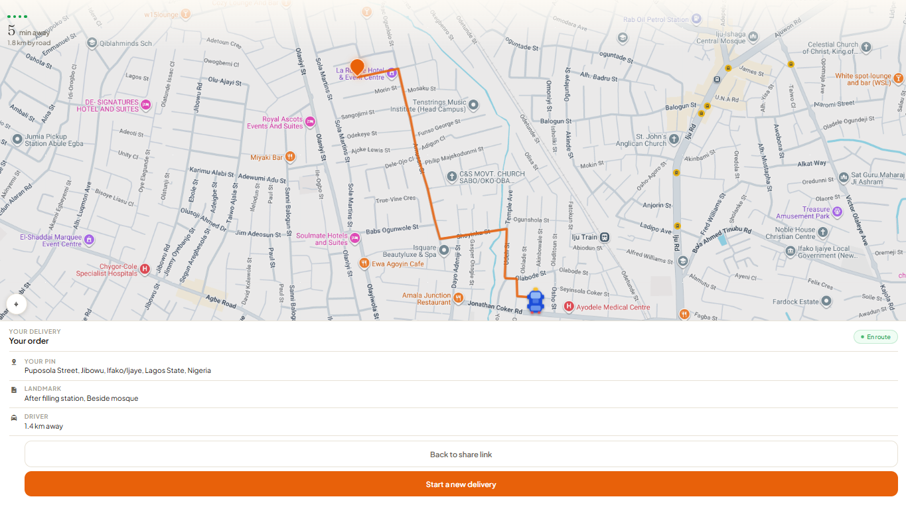
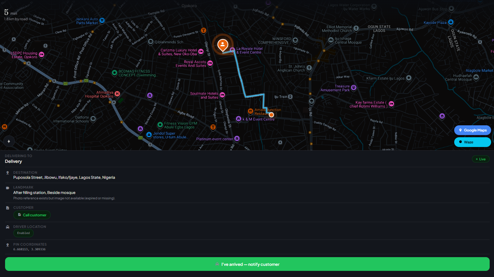
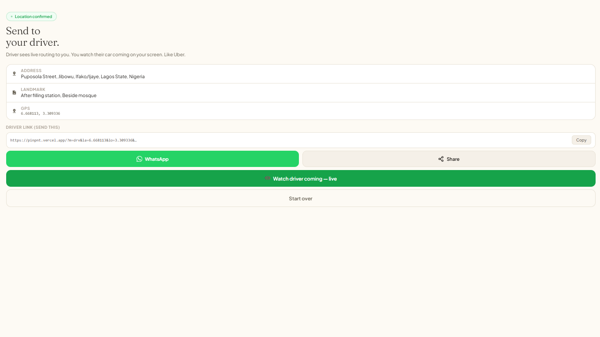

PinPoint
Real-time delivery tracking for descriptive Nigerian addressing—customers drop a GPS pin and a gate photo, routes run through OSRM, and zero machine learning anywhere in the system.




Context
In a lot of Nigerian neighborhoods, delivery addresses are descriptive, not structured—“by the junction, after the filling station, red gate.” That works for humans and breaks every system that assumes an address maps cleanly to a location, costing drivers multiple calls per delivery just to find the door.
What I built
A real-time delivery tracking system, deliberately built with zero machine learning. Customers drop a real GPS pin from their own device, add a photo of their gate, and both sides sync through Firebase’s realtime database on a 1.5 to 2 second polling interval. Routes calculate through OSRM for real road paths, and the app automatically fetches a fresh route the moment a driver drifts more than 300 meters off course.
Why this approach
A descriptive address like “by the junction, red gate” can land you on the right street, but it can never name an exact door—the door’s accuracy simply isn’t in the words. So the real problem was never language, it was getting two people to agree on one precise point in space. That’s why the product leads with a real GPS pin dropped from the customer’s own phone, and routes through OSRM for actual roads. An LLM adds nothing here: even a perfect parse of those words still produces only an area, and you’d pay latency and cost for the same answer a pin gives for free.
Role & scope
The full tracking flow, the sync architecture, and the routing logic for both the driver and customer views.
Result
A live product that solves the real problem instead of the impressive-sounding version of it, with zero inference cost anywhere in the system.